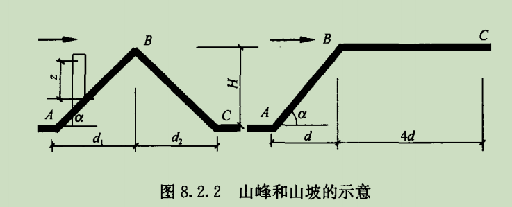
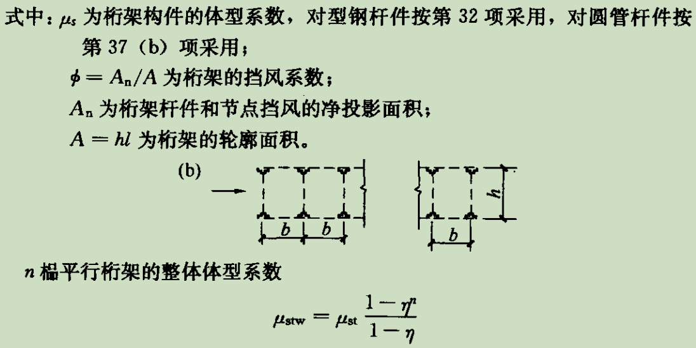

首页
模板支架施工荷载组合计算小程序
支架立柱下混凝土构件局部受压承载力计算
新浇筑混凝土侧压力计算
关于作者
说明
计算依据
规范【1】：《建筑结构荷载规范》GB50009-2012
规范【2】：《混凝土结构工程施工规范》GB50666-2011
规范【3】：《建筑施工临时支撑结构技术规范》JGJ300-2013
标准【4】：《建筑施工承插型盘扣式钢管脚手架安全技术标准》JGJT231-2021
规程【5】：《铁路混凝土梁支架法现浇施工技术规程》TB 10110-2011
使用范围
现浇梁、板施工模板支架承受的风荷载计算。
其他说明
1、风荷载是模板支架承受的主要水平荷载，尤其在模板支立完成未绑扎钢筋或浇筑混凝土之前。
2、风荷载大小与模板支架搭设高度关系很大。
3、模板支架竖向不同部位风荷载体型系数不同，风荷载大小也不同。
4、规范2规定基本风压ω
0
可取10年一遇风压值，并不得小于0.2kPa。
计算相关公式及符号说明：
w
k
计算式:
\(w_{k}=β_{z}μ_{s}μ_{z}ω_{0}\)
η
B
计算式：
\(η_{B}=[1+k\tan(a)(1-\frac{z}{2.5H})]^2\)
β
z
计算式:
\(β_{z}=1+2gI_{10}B_{z}\sqrt{(1+R^2)}\)
R计算公式：
\(R=\sqrt{(\frac{π}{6ξ_{1}})*\frac{x_{1}^2}{(1+x_{1}^2)^\frac{4}{3}}}\)
一、风荷载计算基本参数
地区基本风压 (ω
0
,kPa):
结构离地面或海平面高度 (H
0
,m):
结构迎风面宽度 (B
yf
,m):
结构侧风面宽度 (B
cf
,m):
结构类型:
A:钢结构
B:钢筋混凝土结构
二、风压高度变化系数计算
地面粗糙度类别:
A:位于近海海面和海岛、海岸、湖岸或沙漠地区
B:位于田野、乡村、丛林、丘陵以及房屋比较稀疏的乡镇
C:位于密集建筑群的城市市区
D:位于有密集建筑群且房屋较高的城市市区
计算基本μ
z
风压高度变化系数 (μ
z
):
山区风压高度变化修正系数计算

山区顶部B处风压高度变化修正系数 (η
B
):
系数k:山峰取2.2，山坡取1.4：
山峰或山坡迎风一侧的坡度，坡度大于0.3时取0.3：
山峰或山顶全高(H,m)：
计算位置离地面高度,z>2.5H时，取z=2.5H(z,m)：
A处修正系数η
A
取值为：
C处修正系数η
C
取值为：
山间盆地或谷地等闭塞地形，η∈[0.75~0.85]：
风向一致的山口、谷口，η∈[1.2~1.5]：
山区风压高度变化修正系数 (η
B
):
计算η
B
远海海面和海岛的风压高度变化系数修正系数
建筑物或构筑物距海岸的距离（km）：
远海海面和海岛的风压高度变化系数修正系数 (η
yh
):
计算η
yh
三、风振系数计算
顺风向风振系数计算
计算顺风向风振系数：
顺风向风振系数 (β
zsf
):
计算β
z
四、风荷载体型系数计算
1、相关规范图表

2、根据规范3第4.2.5条，可以按照桁架结构型式参照规范1中的图表计算体型系数
注1：模板支架结构形式包括满堂式、梁柱式，此计算统一按桁架计算体型系数
注2：梁柱式分下部钢管柱结构和上部型钢梁结构，输入参数针对上部桁架梁部分
3、模板支架结构主要参数
迎风面立杆直径或宽度：B
lg
(mm)：
迎风面立杆纵向间距：X
lg
(mm)：
迎风面水平杆直径或高度：B
spg
(mm)：
迎风面水平杆竖向间距：h
spg
(mm)：
迎风面桁架斜杆的直径或宽度:B
xg
(mm)
迎风面桁架斜杆的长度:l
xg
(mm)
计算挡风面积时最小单元内斜杆的数量:n
xg
迎风面桁架的榀数:n
hj
迎风面桁架的榀间距:b
hj
(mm)
4、计算桁架挡风系数
注3：规范3第4.2.5节第3条指出：密目式安全立网全封闭支撑结构挡风系数不宜小于0.8。基于安全考虑一般取1.0。此支撑结构状况下体型系数直接用1.3即可； 例如，梁底至梁面上防护栏杆范围内的支撑结构就可采用此体型系数进行风荷载计算。
注4：对于非悬挂密目式安全网处的支撑结构可按裸桁架形式计算体型系数。
纯桁架挡风系数-未乘1.2系数且未考虑挂密目式安全网工况- (φ):
单榀桁架体型系数-(μ
st
):
桁架整体体型系数- (μ
stw
):
5、计算桁架的体型系数
计算整体桁架的体型系数μ
stw
五、风荷载体型标准值计算
综合上述各步骤计算结果，计算支撑结构风荷载标准值。
此结果为支撑结构中非悬挂密目网的桁架部分所承受的风荷载，应用时用桁架面积乘风荷载标准值。
支撑结构中的其他杆件，如钢管立柱，其风荷载体型系数另做计算。
计算风荷载标准值w
k
桁架结构风荷载标准值 (w
k
):
kN/m
2